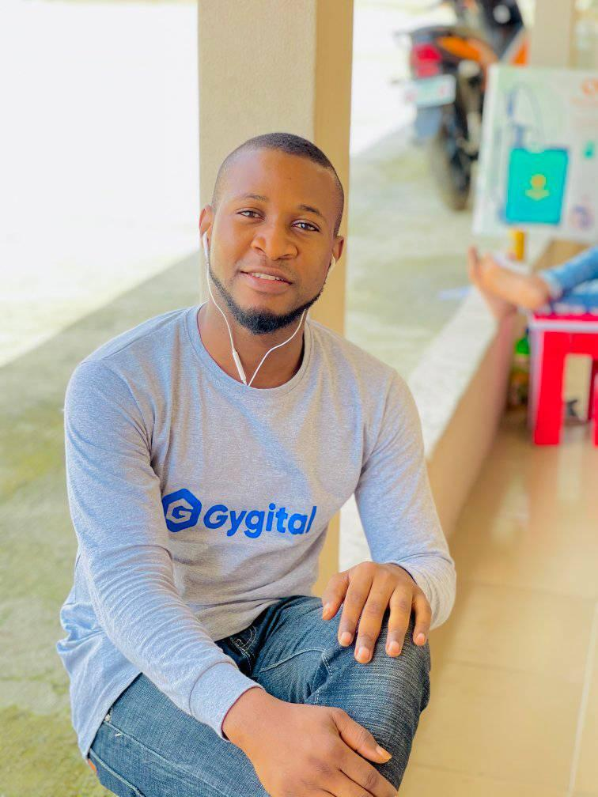
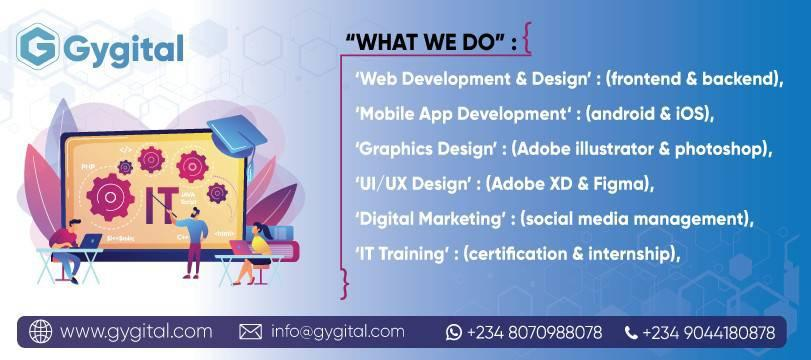
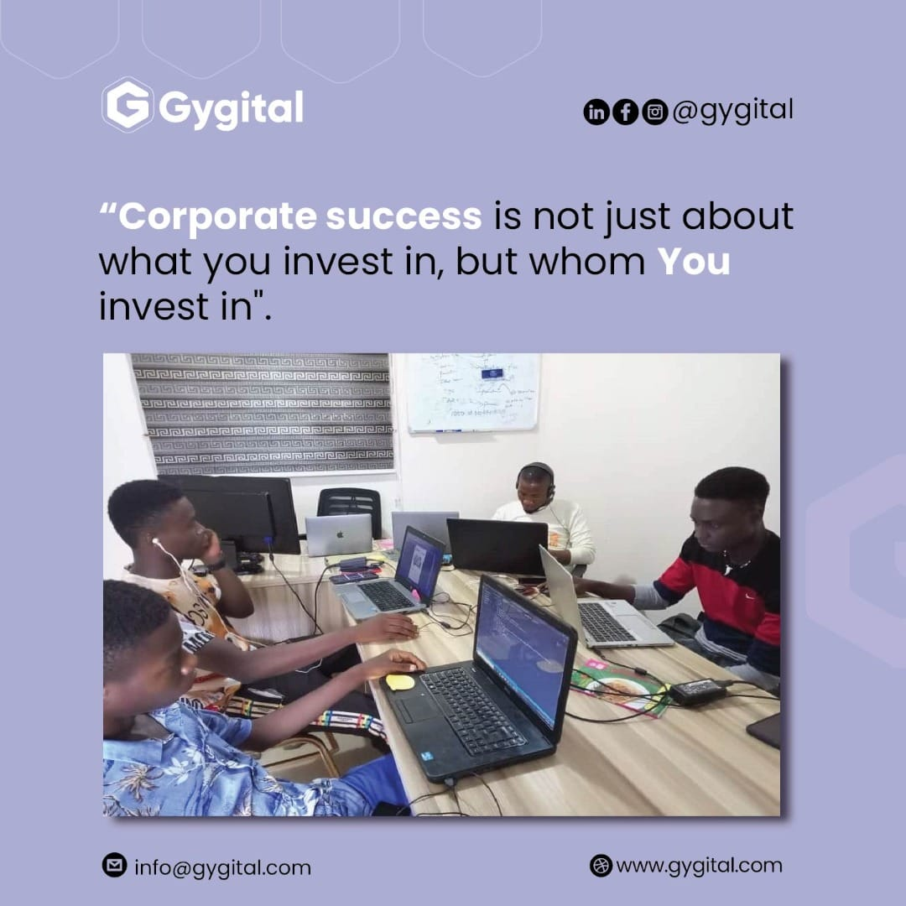
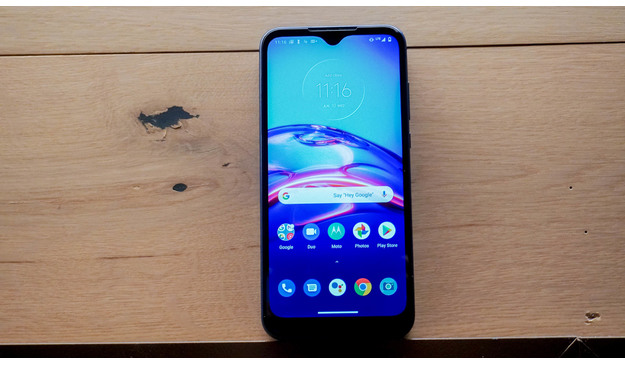

Doing Tech As A Team
Tech is all around us, Monday July 26th, 2021.

Sometime ago, I had the rare privillege of joining the Sogal Global Community. It was a global community comprising of female and divers founders from all over the world. From New York to Cape Town to Cairo in Egypt and to India. Sogal is not just the gathering of the women, but a gathering of women who motivate, inspire and lead the tech world. With headquarters located in San Fransciso, USA. They've created a team of over 5,000 female founders and founders inspire thousands of other women across the globe to be their very best. SoGal Foundation is the largest global platform for diverse entrepreneurs and investors. Spanning 6 continents with hyper-local programming in over 50 cities, our mission is to close the diversity gap in entrepreneurship and venture capital. SoGal Foundation began in 2015 with a mission to redefine the next generation of diverse entrepreneurs and investors. When SoGal founders Elizabeth Galbut and Pocket Sun met in their VC training program, they shared a passion to create systemic change from the ground up in this industry, and immediately banded together to form the SoGal community alongside sister organization SoGal Ventures.
Tech In Nigeria's Capital, Abuja.
Tech is all around us, Monday July 26th, 2021.

Talking about the tech ecosystem in Abuja, Nigeria's capital city I feel it has gained some form of exposure lately. Before now, it was difficult to grasp the concept of an Abuja start-up ecosystem, but thanks to organisations such as Startup Arewa; Ventures Platform Hub, comprising Ventures Park, Ventures Platform Foundation and Ventures Platform Fund; Network of Incubators and Innovators in Nigeria, Box Office and Layer3. Living in Abuja, Godswill Azubike witnessed rapid growth in tech ecosystem in the past few years. It has no doubt inspired him and his team to develop and launch Tristics , Nigeria's first peer-to-peer travel and logistics platform in November, 2020. In 2016, Ventures Platform Hub, founded by Kola Aina, came on the scene, with a bang. Yes, the bang was loud because, first, it was located in the heart of Abuja; next, it was truly creative and artistic as it was primarily built out of shipping containers. The hub, alongside all of its activities, quickly took its place as one to reckon with and it has since grown over the years, positively changing the landscape of early stage investment and hub operations across the country.
Tech In Africa's Most Populous City, Lagos.
Tech is all around us, Monday July 26th, 2021.

According to a New Report by Startup Genome, the local startup ecosystem in Lagos is valued at $2 billion, making it the most valuable on the continent. Lagos is the most valuable despite only having an estimated 400 to 700 active startups, much fewer than the up to 1,200 in Cape Town—the largest startup ecosystem on the continent. For startups, Lagos, Africa’s largest city, appears to be a land of promise with its huge addressable population of over 20 million peole and a tech ecosystem that’s bursting with energy and dynamism.
Turning Tech Skills To Finance
Tech is all around us, Monday July 26th, 2021.

You can start earning money with your tech skills without a computer science degree or 15, 5, or even 1 year of experience. Fact! With just the fundamentals, you’re already ready to work on real projects that people will pay you real money for. If you’re wondering how that’s possible, I’ll tell you tech skills are in demand. People, organizations, and companies all need websites and web content nowadays. And most of them can’t and/or don’t want to design or develop the sites themselves. And you don’t have to worry about being new to the tech world. You can learn what you need to know in as little as a few weeks. So, making money with new tech skills can be totally doable (remote or in person) for you in no time!
- Visual Editing and Design
- Branding
- Web Design
- UX (User Experience) Design
- Digital Marketing
- WordPress Development
- Mobile App Development
- Python Web App Development and Data Analysis
About Me

Justice Orogun is a Web and Mobile App Developer at Gygital. He is passionate about connecting people and businesses.
He was nominated for Nigeria's 25 Under 25 Awards in the Education category in 2020. His desire make a difference is
what keeps him going even in difficult times.
He can be reached via the mail Justice@Gygital.com
Popular Post

